Capítulo 1
A CONSTRUÇÃO CIVIL
Contextualizando
A CONSTRUÇÃO CIVIL
A construção civil é o ramo da indústria que engloba a confecção de obras como casas, edifícios, pontes, barragens, estradas, aeroportos etc. e é um dos setores que mais emprega no Brasil hoje. Participam dessas obras diversos profissionais e cada um tem sua importância ao longo de toda a execução de um projeto.
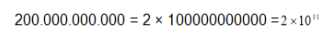O arquiteto é o profissional que inicia os trabalhos, elaborando o projeto, desenvolvendo os primeiros estudos e gerando uma planta detalhada, onde é diagramada a disposição de cada área, que materiais serão utilizados na construção, especificando acabamentos e os métodos adequados para a construção. Sua participação vai desde os primeiros passos da construção até os detalhes da decoração. O engenheiro põe em prática o projeto elaborado pelo arquiteto. Atua liderando e supervisionando a equipe e dando as orientações necessárias aos profissionais da obra. Ele realiza os cálculos e projetos estruturais, e cuida da parte do planejamento e da execução da construção. O mestre de obras organiza as tarefas durante a construção, é responsável por acompanhar os profissionais na obra, sendo o intermediário entre o engenheiro e a equipe de operários. Pedreiros, armadores, pintores, eletricistas, encanadores, num trabalho de equipe realizam a construção, junto a outros não menos importantes, como os ceramistas, os marmoristas, serralheiros, motoristas e operadores de máquinas e equipamentos. Todos os profissionais envolvidos na elaboração e execução de uma obra, desde o seu projeto até a sua finalização, trabalham com números, suas diferentes representações e funções e sem eles não conseguiriam realizar muitas etapas do seu trabalho.
Como surgiu o número e quais suas diferentes representações e funções?Caro aluno, Ao longo deste capítulo, você vai explorar temas relacionados aos números naturais, suas diferentes funções e representações, um pouco de sua história, o sistema de numeração decimal e as operações com números naturais. As atividades propostas a seguir vão auxiliá-lo a responder à questão proposta.
(RE) CONSTRUINDO CONHECIMENTOS...Você sabe que, no dia a dia, os números aparecem em muitas situações. Observe o quadro abaixo.
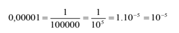O quadro mostra diferentes situações em que os números são utilizados no dia a dia. Se você parar para pensar, certamente perceberá que é difícil encontrar uma situação que não esteja direta ou indiretamente relacionada aos números. Os números são empregados para:
- CONTAR: determinando a quantidade de objetos de uma coleção, o número de inscritos em uma competição, etc.
- MEDIR: indicando o tamanho de um objeto, uma distância percorrida, o tempo gasto para realizar uma tarefa, etc.
- ORDENAR: definindo a ordem de colocação dos atletas em uma competição, a prioridade de um atendimento hospitalar, etc.
- CODIFICAR: individualizando, por exemplo, o registro em um documento de identidade, nas senhas de banco, etc.
Os números utilizados naturalmente para contar são chamados números naturais.
PARA ENTENDER MAIS...Acesse o vídeo clicando no link a seguir:
Colocando os números naturais em ordem crescente, você obtém a seguinte sequência numérica:
0, 1, 2, 3, 4, 5, 6, 7, 8, 9, 10, 11, 12...
Essa sequência é denominada de Conjunto dos Números Naturais, cuja representação é:
N = {0, 1, 2, 3, 4, 5, 6, 7, 8, 9, 10, 11, 12...}
A sequência dos números naturais cresce de 1 em 1 e quando a diferença entre dois números é de uma unidade, esses números são denominados de consecutivos.
Por exemplo, os números 2 e 3 são consecutivos, pois a diferença entre eles é de uma unidade.
Todo número natural tem um sucessor, que é o número obtido somando uma unidade a esse número.
Exemplos:
- O sucessor do número 1 é o número 2, pois 1 + 1 = 2
- O sucessor do número 2 é o número 3, pois 2 + 1 = 3
Todo o número natural com exceção do zero tem um antecessor, que é o número obtido quando retiramos uma unidade desse número.
Exemplos:
- O antecessor do número 1 é o zero, pois 1 – 1 = 0
- O antecessor do número 2 é o número 1, pois 2 – 1 = 1
O número zero é o menor dos naturais, mas não possível determinar o maior número natural, pois essa sequência de números é infinita.
RELEMBRANDO A HISTÓRIANem sempre os números foram representados da forma que hoje são conhecidos. Cada civilização criou seus símbolos e sistemas para representar contagens e medições e a diferença em cada uma delas se deve à cultura de cada povo.
SISTEMA EGÍPCIO
O Sistema dos Egípcios tinha as seguintes características:
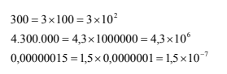SISTEMA DOS BABILÔNIOS
No Sistema dos Babilônios (2.000 a.C.), o valor dos símbolos dependia da posição que ele ocupava, o que caracteriza um sistema posicional. O sistema dos egípcios tinha as seguintes características:
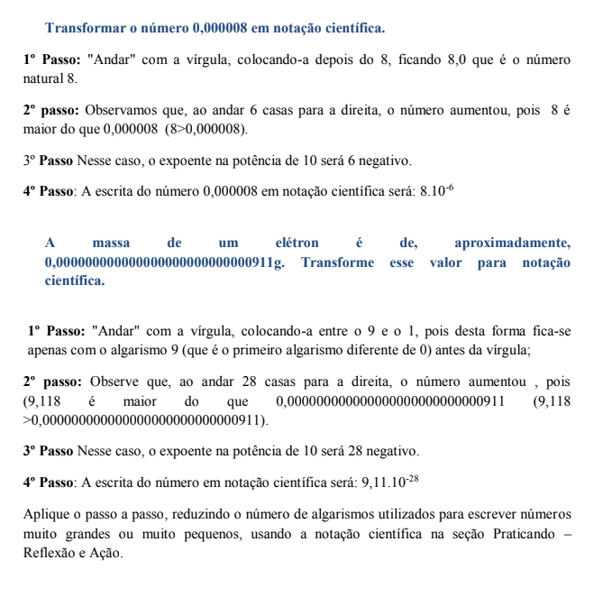SISTEMA DOS MAIAS
No Sistema dos Maias, o valor dos símbolos também dependia da posição que eles ocupavam no número. Eles foram os primeiros a usar uma representação para o zero. O sistema dos maias tinha as seguintes características:

SISTEMA ROMANO
O Sistema Romano (114 d.C.) é utilizado até hoje para indicar capítulos de livros, séculos, títulos de reis e papas. O Sistema Romano tem as seguintes características:

SISTEMA DE INDO-ARÁBICO
O Sistema de Indo-arábico foi desenvolvido pelos habitantes do vale do Rio Indo e difundido pelos árabes, foi o sistema de numeração que predominou sobre os outros e é utilizado até hoje, pela representação simplificada de quantidades e a possibilidade de usar essa representação em cálculos.
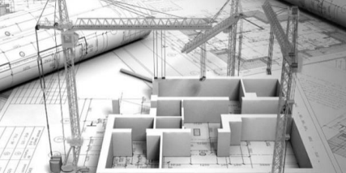 ORDENS E CLASSESQuando se escreve um número no sistema indo-arábico, cada algarismo ocupa uma ordem e tem um valor. As unidades, as dezenas e as centenas são as ordens. Veja o exemplo: no número 1.273.418
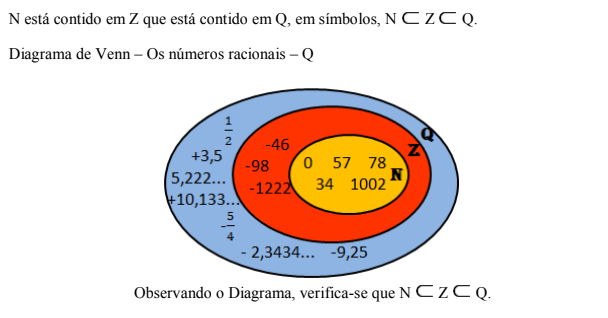Para facilitar essa leitura, as ordens foram agrupadas de três em três, da direita para a esquerda, formando as classes e estão organizadas conforme o quadro a seguir.
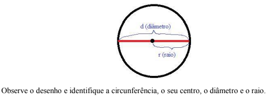Assim, considerando as classes, lemos o número da seguinte forma:
Um milhão, duzentos e setenta e três mil, quatrocentos e dezoito unidades.
1) Expresse o valor do algarismo 5 na representação de cada número, conforme o exemplo que segue.
a) 1.500 = centenas = 5 x 100
b) 150 = ______________________________
c) 105 = ______________________________
d) 5.234 =_____________________________
Ao realizar os exercícios, você verificou que o algarismo 5 tomou diferentes valores, conforme a sua posição no número: no exercício a, 500 unidades; no exercício b, 50 unidades no exercício c, 5 unidade e no exercício d, 5000 unidades.
2) Decomponha os números, conforme o exemplo.
a) a) 1.224 = 1.000 + 200 + 20 + 4
b) 3.244 = ____________________________
c) 72.326 = ___________________________
c) 72.326 = ___________________________
3) Escreva os números usando somente algarismos, conforme o exemplo.
a) 3 milhões, 120 mil e 5 unidades = 3.120.005
b) 110 mil, 234 unidades = __________________
c) 1 milhão, 116 mil e 34 unidades = __________
d) 24 milhões, 302 mil e 2 unidades =__________
PARA ENTENDER MAIS...Acesse o vídeo clicando no link a seguir:
A ADIÇÃO NOS NÚMEROS NATURAIS
A adição está associada às ideias de juntar, acrescentar, reunir.
Ao adicionar, você pode usar o formato de frase ou de conta armada, conforme o quadro a seguir.
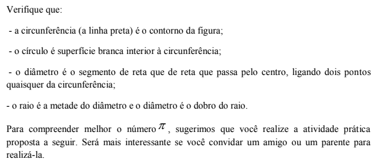As adições de números naturais podem ser com ou sem transporte, conforme os exemplos a seguir.
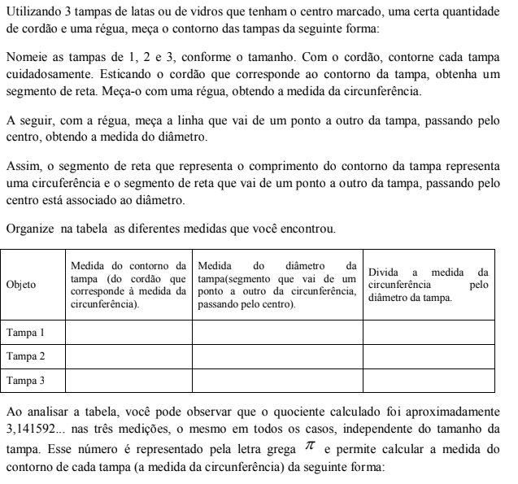A SUBTRAÇÃO NOS NÚMEROS NATURAIS
A subtração está associada às ideias de tirar, separar, dar, diminuir, reduzir, perder, descontar e comparar.
Assim como na adição, pode-se realizar a subtração em forma de frase ou de conta armada.
Na subtração de números naturais, o minuendo deve ser maior que o subtraendo.

A subtração de números naturais pode ser com ou sem retorno. Veja os exemplos a seguir.
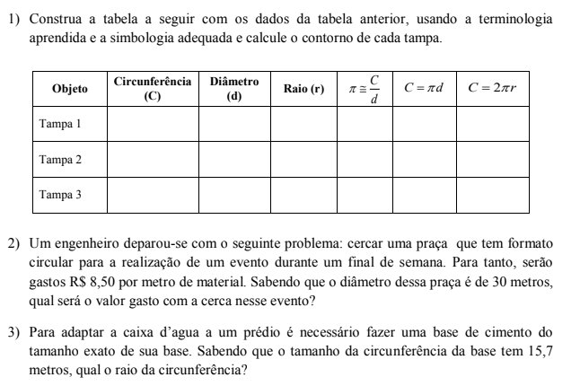Os termos das operações de adição e subtração têm nomes especiais. Observe os quadros a seguir e memorize-os.

A MULTIPLICAÇÃO NOS NÚMEROS NATURAIS
A multiplicação pode ser empregada com a ideia de adição de parcelas iguais, de proporcionalidade, de dobrar muitas vezes, de combinar, de formação retangular.
Observe algumas ideias de multiplicação:
FORMAÇÃO RETANGULAR:
Na fachada de um prédio de cinco andares há 9 janelas alinhadas em cada andar. Você pode, então, observar que estão representadas 5 fileiras com 9 janelas em cada uma.
Quantas janelas há na fachada do prédio?

IDEIA DE COMBINAÇÃO
Quantos conjuntos de blusa e bermuda diferentes podemos formar com 4 blusas e 3 bermudas?

Analise as possibilidades:

Esse esquema, ajuda a entender que para cada tipo de blusa tem 3 possibilidades de bermuda e, como tem 4 blusas, são 4 x 3 =12 possibilidades. Portanto, é possível formar 12 diferentes combinações de blusa e bermuda.
A DIVISÃO NOS NÚMEROS NATURAIS
A DIVISÃO NOS NÚMEROS NATURAIS
No conjunto dos números naturais, a divisão pode ser:

Os termos das operações de multiplicação e divisão, também têm nomes especiais. Veja os quadros a seguir e memorize-os.
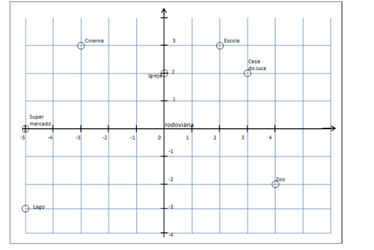 Praticando:Agora que você recordou como fazer cálculos com números naturais, resolva alguns problemas.
1) No canteiro de obras de uma construtora, estavam trabalhando 13 pedreiros e 5 serventes de pedreiro. Quantos trabalhadores tinha ao todo no canteiro de obras?
2) Dos 20 operários de uma construtora, 8 foram demitidos. Quantos operários restaram?
3) Para construir um muro, Paulo utilizou 10 fileiras de 8 tijolos cada uma. Quantos tijolos Paulo precisou?
3) Para construir um muro, Paulo utilizou 10 fileiras de 8 tijolos cada uma. Quantos tijolos Paulo precisou?
Expressões NuméricasAs expressões numéricas são sentenças matemáticas que podem envolver as operações de adição, subtração, multiplicação e divisão.
Quando tiver adições, subtrações, multiplicações e divisões em uma mesma expressão numérica, você deve fazer as operações na seguinte ordem:
1) As multiplicações e divisões na ordem que aparecem na expressão.
2) As adições e subtrações, também, na ordem que aparecem.
Exemplos:
- 2 x 5 + 10 = 10 + 10 = 20
- 18 + 5 x 3 = 18 + 15 = 33
Resolva as questões a seguir e verifique suas respostas no final do capítulo.
1) Escreva o que cada número do texto a seguir indica: contar, medir, ordenar ou codificar.
Meu nome é Paula, tenho 15 anos, moro com meus pais e 3 irmãs. Costumo caminhar 200 metros para ir à escola. Sou sempre a 1a a chegar na sala de aula e minha matrícula é 2874.
2) Descubra o número natural de acordo com cada informação:
a) Sucessor de 24 é
b) Antecessor de 46
c) O consecutivo de 5.
3) Observe a decomposição dos números e descubra quais são:
a) 1 000 + 600 + 60 + 5
b) 10 000 + 300 + 40 + 5
c) 20 000 + 30+ 6
4) Para pintar a casa, Paulo comprou 15 litros de tinta. Pintou alguns cômodos e a tinta acabou. Para terminar a pintura, ele comprou mais 4 litros. Quantos litros ele comprou ao todo?
5) Ana recebe um salário mensal de R$ 2.000,00. Este mês ela teve gastos extras e lhe sobraram somente R$ 265,00 reais. De quanto foram, no total, os gastos de Ana neste mês?
6) A construtora que Pedro trabalha, acabou de construir um prédio que 6 apartamentos por andar. Se o prédio tem 5 andares, qual a quantidade de apartamentos desse prédio?
7) O elevador do prédio que Paula mora, pode transportar, no máximo, 630 quilogramas de cada vez. Quantas pessoas de 70 quilogramas podem ser transportadas no elevador?
8) Resolva as expressões numéricas, respeitando a ordem das operações.
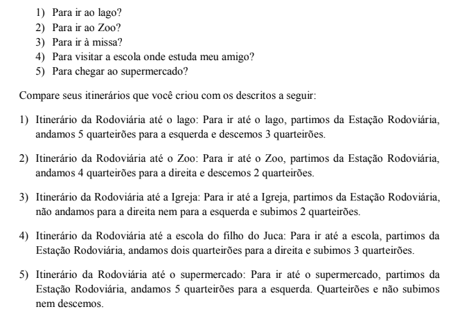 O QUE APRENDIA longo desse capítulo, trabalhando com os Números Naturais, sua evolução ao longo das civilizações, suas diferentes representações, você viu que podemos usá-los para contar, ordenar, medir e codificar. Você aprendeu, também, a calcular com Números Naturais e resolveu problemas relacionados ao contexto da construção civil.